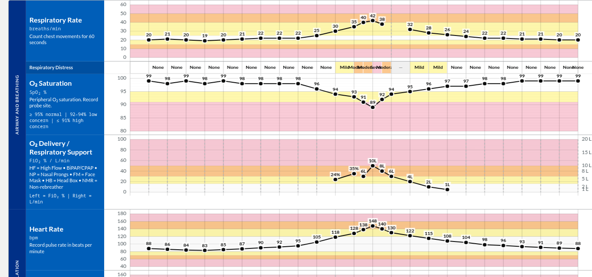
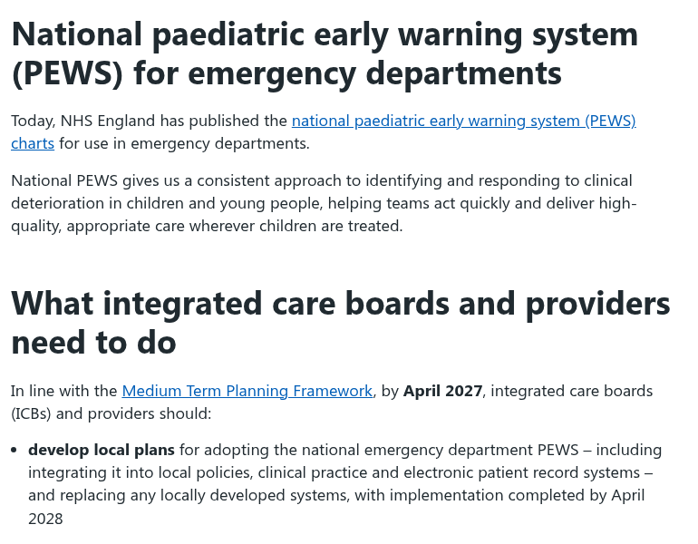
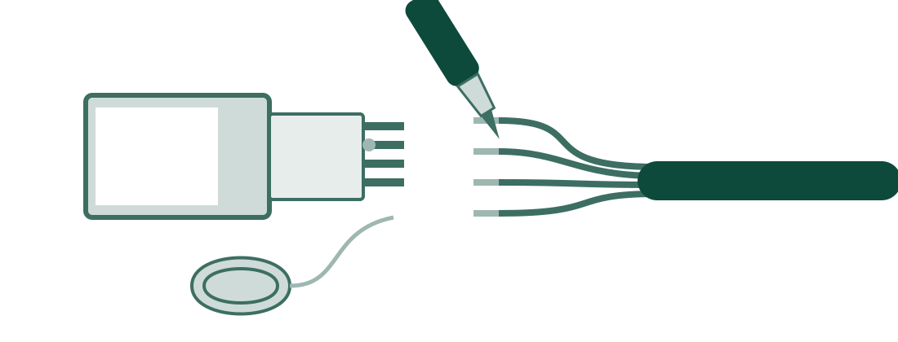

(Is The Only Way)

Inpatient NPEWS prototype · synthetic data · not approved for clinical use
Dr Marcus Baw · PCHT2026

April 2027
Local plans
April 2028
Implementation complete
Source: NHS England, “National PEWS for emergency departments” · linked screenshot
Suppose funded procurement starts in April 2027.
Apr 2027
Oct 2027
Apr 2028
Oct 2028
Procurement: 6 months
6 months left
Procurement: 18 months
Deadline
Development, integration, assurance and rollout still need time.
Illustration, not a forecast. Procurement range is the speaker’s estimate, not a cited benchmark.
A new procurement starts in April 2027.
The 6–18-month range needs evidence.
Existing contracts may shorten the route.
Clinical safety work runs throughout.
Optional discussion slide · no quantified cost or delivery saving is claimed
One clinical specification
Build + verify
Maintain
Build + verify
Maintain
Build + verify
Maintain
Local integration and deployment assurance, too.
Conceptual illustration · no supplier prices or measured savings claimed

Open-source chart + scoring
EPR A
EPR B
EPR C
Each host keeps its records and clinical workflow.
Proposed integration model · these are illustrative hosts, not deployed integrations
Test the clinical rules.
Check the rendered chart.
Assess the integrated system.
No clinically approved Digital PEWS release has been designated.
Prototype available
Separate component proposed
ED runtime not implemented · no clinical approval claimed for either component
Clinical review and integration partners.
Started in the RCPCH Incubator. Development now continues under OHTF.